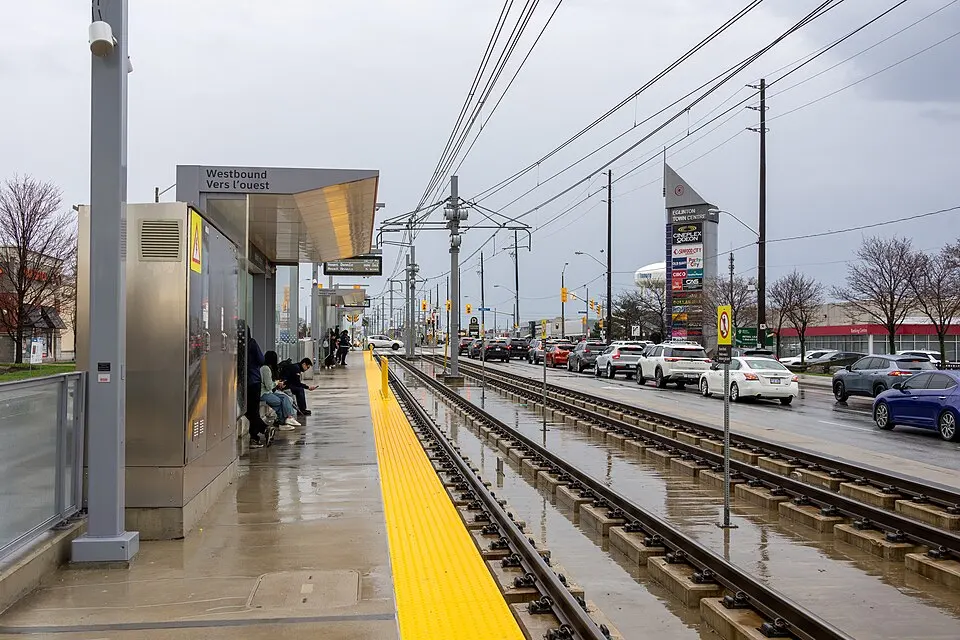

Signal
SignalStation atlas / Hakimi Lebovic
Station history
Hakimi Lebovic


Station history
Metrolinx honoured Karim Hakimi and Joseph Lebovic in May. The stop’s paired name reflects the change in street name across Eglinton.
The surface stop opened at Lebovic Avenue. During planning it was known simply as Lebovic.